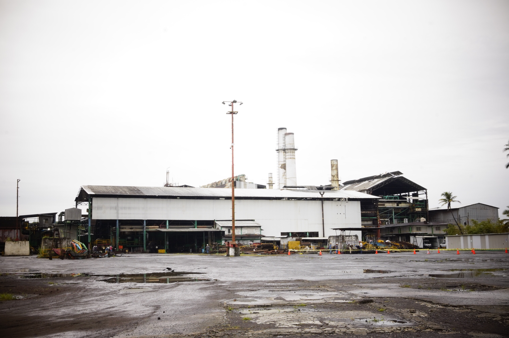

Nuestra identidad
Quiénes somos
En el Ingenio San Pedro, la caña es más que un cultivo: es el sustento de miles de familias.
Desde Lerdo de Tejada, trabajamos de la mano con productores, obreros y comunidades para convertir el esfuerzo del campo en azúcar de calidad.
